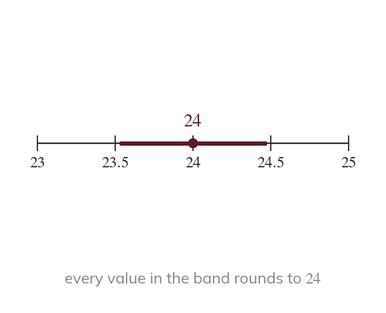
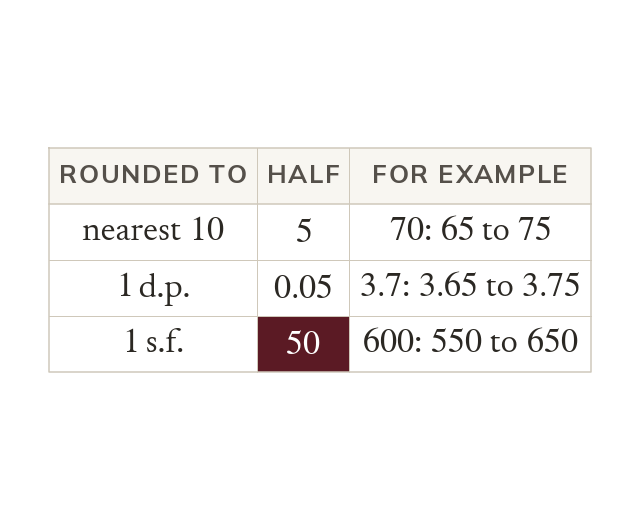
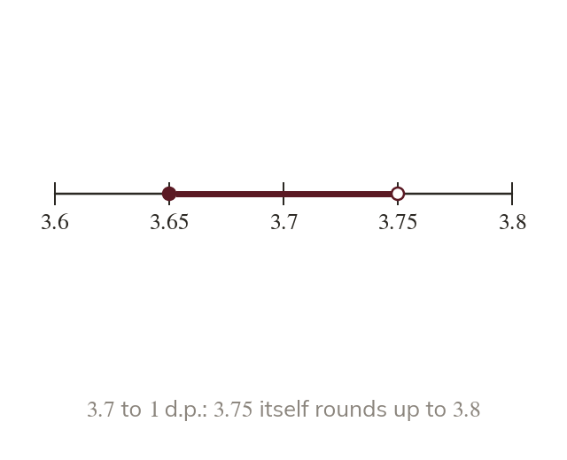
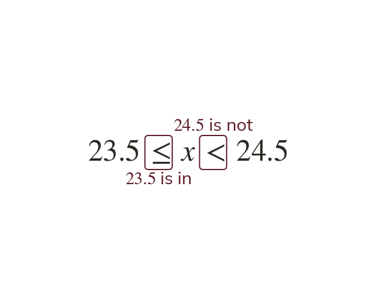
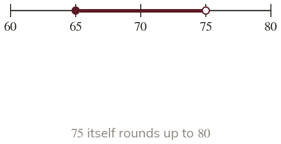

A rounded value is an interval
A rounded value stands for a whole interval. Its bounds lie half a unit either side.
A rounded value stands for every value that rounds to it. The bounds lie half a rounding unit either side of it.
A length given as cm could really be anything from cm up to cm. Bounds say exactly how far a rounded value can be trusted.
Work down the page at your own pace. Write every answer in your book first, then click to check it.
Read each card, then follow the worked examples one step at a time.

A rounded value stands for a whole interval. Its bounds lie half a unit either side.

The unit is what the value was rounded to. Half of that unit gives the bounds.
Pick an answer. If it's wrong, the feedback tells you which mistake it was.
Read each card, then follow the worked examples one step at a time.

The lower bound is in the interval, and the upper bound is not. The upper bound rounds up.

An error interval is written lower bound ≤ < upper bound. For :

Pick an answer. If it's wrong, the feedback tells you which mistake it was.
Finished? Next lesson: 10H.11.7 Bounds in Calculations.
Log in, then search for a code to practise that skill.
Videos, worksheets and more on each part of this lesson.